Author: Tal Galili (homepage: r-statistics.com, e-mail: Tal.Galili@gmail.com )
tl;dr: the dendextend package let’s you create figures like this:
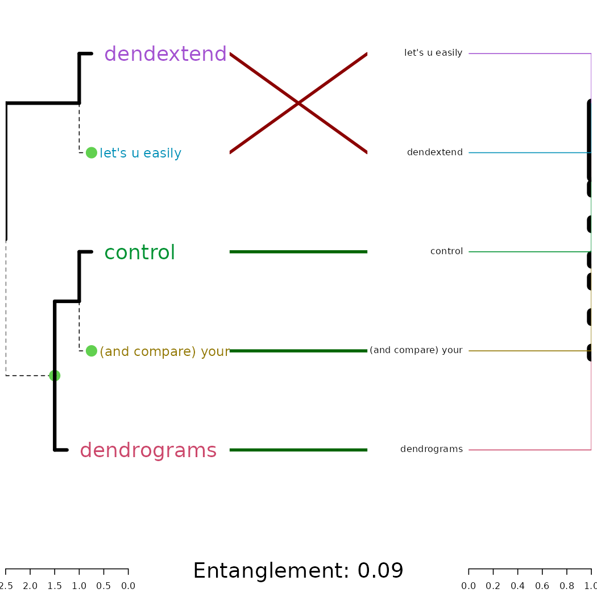
Introduction
The dendextend package offers a set of functions for extending dendrogram objects in R, letting you visualize and compare trees of hierarchical clusterings, you can:
- Adjust a tree’s graphical parameters - the color, size, type, etc of its branches, nodes and labels.
- Visually and statistically compare different dendrograms to one another.
The goal of this document is to introduce you to the basic functions that dendextend provides, and show how they may be applied. We will make extensive use of “chaining” (explained next).
Prerequisites
Acknowledgement
This package was made possible by the the support of my thesis adviser Yoav Benjamini, as well as code contributions from many R users. They are:
#> [1] "Tal Galili <tal.galili@gmail.com> [aut, cre, cph] (https://www.r-statistics.com)"
#> [2] "Gavin Simpson [ctb]"
#> [3] "Gregory Jefferis <jefferis@gmail.com> [ctb] (imported code from his dendroextras package)"
#> [4] "Marco Gallotta [ctb] (a.k.a: marcog)"
#> [5] "Johan Renaudie [ctb] (https://github.com/plannapus)"
#> [6] "R core team [ctb] (Thanks for the Infastructure, and code in the examples)"
#> [7] "Kurt Hornik [ctb]"
#> [8] "Uwe Ligges [ctb]"
#> [9] "Andrej-Nikolai Spiess [ctb]"
#> [10] "Steve Horvath <SHorvath@mednet.ucla.edu> [ctb]"
#> [11] "Peter Langfelder <Peter.Langfelder@gmail.com> [ctb]"
#> [12] "skullkey [ctb]"
#> [13] "Mark Van Der Loo <mark.vanderloo@gmail.com> [ctb] (https://github.com/markvanderloo d3dendrogram)"
#> [14] "Yoav Benjamini [ths]"The design of the dendextend package (and this manual!) is heavily inspired by Hadley Wickham’s work. Especially his text on writing an R package, the devtools package, and the dplyr package (specifically the use of chaining, and the Introduction text to dplyr).
Chaining
Function calls in dendextend often get a dendrogram and returns a (modified) dendrogram. This doesn’t lead to particularly elegant code if you want to do many operations at once. The same is true even in the first stage of creating a dendrogram.
In order to construct a dendrogram, you will (often) need to go through several steps. You can either do so while keeping the intermediate results:
d1 <- c(1:5) # some data
d2 <- dist(d1)
d3 <- hclust(d2, method = "average")
dend <- as.dendrogram(d3)Or, you can also wrap the function calls inside each other:
dend <- as.dendrogram(hclust(dist(c(1:5)), method = "average"))However, both solutions are not ideal: the first solution includes redundant intermediate objects, while the second is difficult to read (since the order of the operations is from inside to out, while the arguments are a long way away from the function).
To get around this problem, dendextend encourages the use of the
%>% (“pipe” or “chaining”) operator (imported from the
magrittr package). This turns x %>% f(y) into
f(x, y) so you can use it to rewrite (“chain”) multiple
operations such that they can be read from left-to-right,
top-to-bottom.
For example, the following will be written as it would be explained:
dend <- c(1:5) %>% # take the a vector from 1 to 5
dist %>% # calculate a distance matrix,
hclust(method = "average") %>% # on it compute hierarchical clustering using the "average" method,
as.dendrogram # and lastly, turn that object into a dendrogram.For more details, you may look at:
A dendrogram is a nested list of lists with attributes
The first step is working with dendrograms, is to understand that they are just a nested list of lists with attributes. Let us explore this for the following (tiny) tree:

And here is its structure (a nested list of lists with attributes):
#> List of 2
#> $ : int 1
#> ..- attr(*, "label")= int 1
#> ..- attr(*, "members")= int 1
#> ..- attr(*, "height")= num 0
#> ..- attr(*, "leaf")= logi TRUE
#> $ : int 2
#> ..- attr(*, "label")= int 2
#> ..- attr(*, "members")= int 1
#> ..- attr(*, "height")= num 0
#> ..- attr(*, "leaf")= logi TRUE
#> - attr(*, "members")= int 2
#> - attr(*, "midpoint")= num 0.5
#> - attr(*, "height")= num 1
dend %>% class#> [1] "dendrogram"Installation
To install the stable version on CRAN use:
install.packages('dendextend')To install the GitHub version:
require2 <- function (package, ...) {
if (!require(package)) install.packages(package); library(package)
}
## require2('installr')
## install.Rtools() # run this if you are using Windows and don't have Rtools installed
# Load devtools:
require2("devtools")
devtools::install_github('talgalili/dendextend')
<!-- require2("Rcpp") -->
# Having colorspace is also useful, since it is used
# In various examples in the vignettes
require2("colorspace")And then you may load the package using:
How to explore a dendrogram’s parameters
Taking a first look at a dendrogram
For the following simple tree:

Here are some basic parameters we can get:
dend %>% labels # get the labels of the tree#> [1] 1 2 5 3 4
dend %>% nleaves # get the number of leaves of the tree#> [1] 5
dend %>% nnodes # get the number of nodes in the tree (including leaves)#> [1] 9
dend %>% head # A combination of "str" with "head"#> --[dendrogram w/ 2 branches and 5 members at h = 4]
#> |--[dendrogram w/ 2 branches and 2 members at h = 1]
#> | |--leaf 1
#> | `--leaf 2
#> `--[dendrogram w/ 2 branches and 3 members at h = 2]
#> |--leaf 5
#> `--[dendrogram w/ 2 branches and 2 members at h = 1]
#> |--leaf 3
#> `--leaf 4
#> etc...Next let us look at more sophisticated outputs.
Getting nodes attributes in a depth-first search
When extracting (or inserting) attributes from a dendrogram’s nodes, it is often in a “depth-first search”. Depth-first search is when an algorithm for traversing or searching tree or graph data structures. One starts at the root and explores as far as possible along each branch before backtracking.
Here is a plot of a tree, illustrating the order in which you should read the “nodes attributes”:
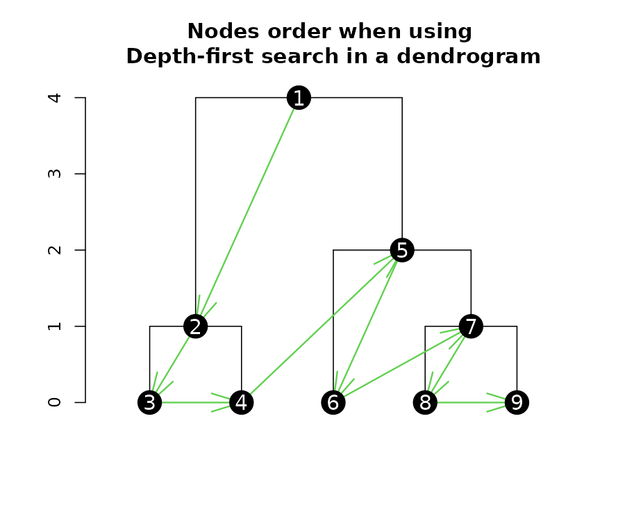
We can get several nodes attributes using get_nodes_attr
(notice the order corresponds with what is shown in the above
figure):
# Create a dend:
dend <- 1:5 %>% dist %>% hclust %>% as.dendrogram
# Get various attributes
dend %>% get_nodes_attr("height") # node's height#> [1] 4 1 0 0 2 0 1 0 0
dend %>% hang.dendrogram %>% get_nodes_attr("height") # node's height (after raising the leaves)#> [1] 4.0 1.0 0.6 0.6 2.0 1.6 1.0 0.6 0.6
dend %>% get_nodes_attr("members") # number of members (leaves) under that node#> [1] 5 2 1 1 3 1 2 1 1
dend %>% get_nodes_attr("members", id = c(2,5)) # number of members for nodes 2 and 5#> [1] 2 3
dend %>% get_nodes_attr("midpoint") # how much "left" is this node from its left-most child's location#> [1] 1.625 0.500 NA NA 0.750 NA 0.500 NA NA
dend %>% get_nodes_attr("leaf") # is this node a leaf#> [1] NA NA TRUE TRUE NA TRUE NA TRUE TRUE
dend %>% get_nodes_attr("label") # what is the label on this node#> [1] NA NA 1 2 NA 5 NA 3 4
dend %>% get_nodes_attr("nodePar") # empty (for now...)#> [1] NA NA NA NA NA NA NA NA NA
dend %>% get_nodes_attr("edgePar") # empty (for now...)#> [1] NA NA NA NA NA NA NA NA NAA similar function for leaves only is
get_leaves_attr
How to change a dendrogram
The “set” function
The fastest way to start changing parameters with dendextend is by
using the set function. It is written as:
set(object, what, value), and accepts the following
parameters:
- object: a dendrogram object,
- what: a character indicating what is the property of the tree that should be set/updated
- value: a vector with the value to set in the tree (the type of the value depends on the “what”). Many times, vectors which are too short are recycled.
The what parameter accepts many options, each uses some general function in the background. These options deal with labels, nodes and branches. They are:
- labels - set the labels (using
labels<-.dendrogram) - labels_colors - set the labels’ colors (using
color_labels) - labels_cex - set the labels’ size (using
assign_values_to_leaves_nodePar) - labels_to_character - set the labels’ to be characters
- leaves_pch - set the leaves’ point type (using
assign_values_to_leaves_nodePar) - leaves_cex - set the leaves’ point size (using
assign_values_to_leaves_nodePar) - leaves_col - set the leaves’ point color (using
assign_values_to_leaves_nodePar) - leaves_bg - set the leaves’ point background color (available only
for pch 21-25, using
assign_values_to_nodes_nodePar) - nodes_pch - set the nodes’ point type (using
assign_values_to_nodes_nodePar) - nodes_cex - set the nodes’ point size (using
assign_values_to_nodes_nodePar) - nodes_col - set the nodes’ point color (using
assign_values_to_nodes_nodePar) - nodes_bg - set the nodes’ point background color (available only for
pch 21-25, using
assign_values_to_nodes_nodePar) - hang_leaves - hang the leaves (using
hang.dendrogram) - branches_k_color - color the branches (using
color_branches) - branches_col - set the color of branches (using
assign_values_to_branches_edgePar) - branches_lwd - set the line width of branches (using
assign_values_to_branches_edgePar) - branches_lty - set the line type of branches (using
assign_values_to_branches_edgePar) - by_labels_branches_col - set the color of branches with specific
labels (using
branches_attr_by_labels) - by_labels_branches_lwd - set the line width of branches with
specific labels (using
branches_attr_by_labels) - by_labels_branches_lty - set the line type of branches with specific
labels (using
branches_attr_by_labels) - clear_branches - clear branches’ attributes (using
remove_branches_edgePar) - clear_leaves - clear leaves’ attributes (using
remove_branches_edgePar)
Two simple trees to play with
For illustration purposes, we will create several small tree, and demonstrate these functions on them.
dend13 <- c(1:3) %>% # take some data
dist %>% # calculate a distance matrix,
hclust(method = "average") %>% # on it compute hierarchical clustering using the "average" method,
as.dendrogram # and lastly, turn that object into a dendrogram.
# same, but for 5 leaves:
dend15 <- c(1:5) %>% dist %>% hclust(method = "average") %>% as.dendrogram
par(mfrow = c(1,2))
dend13 %>% plot(main="dend13")
dend15 %>% plot(main="dend15")
# we could have also used plot(dend)
Setting a dendrogram’s labels
We can get a vector with the tree’s labels:
# get the labels:
dend15 %>% labels#> [1] 1 2 5 3 4
# this is just like labels(dend)Notice how the tree’s labels are not 1 to 5 by order, since the tree happened to place them in a different order. We can change the names of the labels:
#> [1] 111 112 113 114 115
# could also be done using:
# labels(dend) <- c(111:115)We can change the type of labels to be characters. Not doing so may be a source of various bugs and problems in many functions.
dend15 %>% labels#> [1] 1 2 5 3 4#> [1] "1" "2" "5" "3" "4"We may also change their color and size:
par(mfrow = c(1,2))
dend15 %>% set("labels_col", "blue") %>% plot(main = "Change label's color") # change color
dend15 %>% set("labels_cex", 2) %>% plot(main = "Change label's size") # change color 
The function recycles, from left to right, the vector of values we give it. We can use this to create more complex patterns:
# Produce a more complex dendrogram:
dend15_2 <- dend15 %>%
set("labels", c(111:115)) %>% # change labels
set("labels_col", c(1,2,3)) %>% # change color
set("labels_cex", c(2,1)) # change size
par(mfrow = c(1,2))
dend15 %>% plot(main = "Before")
dend15_2 %>% plot(main = "After")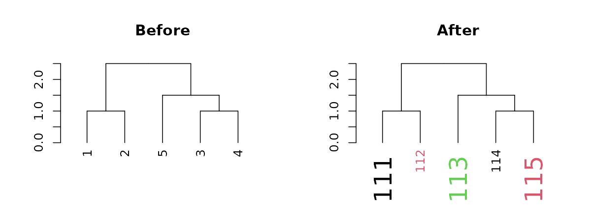
Notice how these “labels parameters” are nested within the nodePar attribute:
#> int 1
#> - attr(*, "label")= int 111
#> - attr(*, "members")= int 1
#> - attr(*, "height")= num 0
#> - attr(*, "leaf")= logi TRUE
#> - attr(*, "nodePar")=List of 3
#> ..$ lab.col: num 1
#> ..$ pch : logi NA
#> ..$ lab.cex: num 2
# looking at only the nodePar attributes in this sub-tree:
dend15_2[[1]][[1]] %>% get_nodes_attr("nodePar") #> [,1]
#> lab.col 1
#> pch NA
#> lab.cex 2When it comes to color, we can also set the parameter “k”, which will cut the tree into k clusters, and assign a different color to each label (based on its cluster):
par(mfrow = c(1,2))
dend15 %>% set("labels_cex", 2) %>% set("labels_col", value = c(3,4)) %>%
plot(main = "Recycles color \nfrom left to right")
dend15 %>% set("labels_cex", 2) %>% set("labels_col", value = c(3,4), k=2) %>%
plot(main = "Color labels \nper cluster")
abline(h = 2, lty = 2)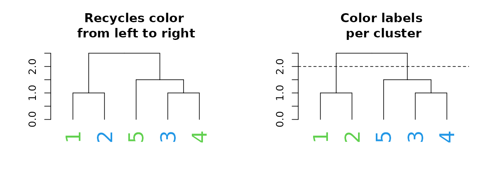
Setting a dendrogram’s nodes/leaves (points)
Each node in a tree can be represented and controlled using the
assign_values_to_nodes_nodePar, and for the special case of
the nodes of leaves, the assign_values_to_leaves_nodePar
function is more appropriate (and faster) to use. We can control the
following properties: pch (point type), cex (point size), and col (point
color). For pch we can additionally set bg (“background”, although it’s
really a fill for the shape). When bg is set, the outline of the point
is defined by col and the internal fill is determined by bg. For
example:
par(mfrow = c(2,3))
dend13 %>% set("nodes_pch", 19) %>% plot(main = "(1) Show the\n nodes (as a dot)") #1
dend13 %>% set("nodes_pch", 19) %>% set("nodes_cex", 2) %>%
plot(main = "(2) Show (larger)\n nodes") #2
dend13 %>% set("nodes_pch", 19) %>% set("nodes_cex", 2) %>% set("nodes_col", 3) %>%
plot(main = "(3) Show (larger+colored)\n nodes") #3
dend13 %>% set("leaves_pch", 21) %>% plot(main = "(4) Show the leaves\n (as empty circles)") #4
dend13 %>% set("leaves_pch", 21) %>% set("leaves_cex", 2) %>%
plot(main = "(5) Show (larger)\n leaf circles") #5
dend13 %>%
set("leaves_pch", 21) %>%
set("leaves_bg", "gold") %>%
set("leaves_cex", 2) %>%
set("leaves_col", "darkred") %>%
plot(main = "(6) Show (larger+colored+filled)\n leaves") #6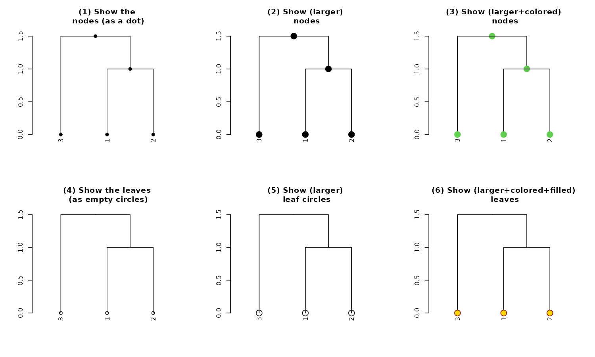
And with recycling we can produce more complex outputs:
par(mfrow = c(1,2))
dend15 %>% set("nodes_pch", c(19,1,4)) %>% set("nodes_cex", c(2,1,2)) %>% set("nodes_col", c(3,4)) %>%
plot(main = "Adjust nodes")
dend15 %>% set("leaves_pch", c(19,1,4)) %>% set("leaves_cex", c(2,1,2)) %>% set("leaves_col", c(3,4)) %>%
plot(main = "Adjust nodes\n(but only for leaves)")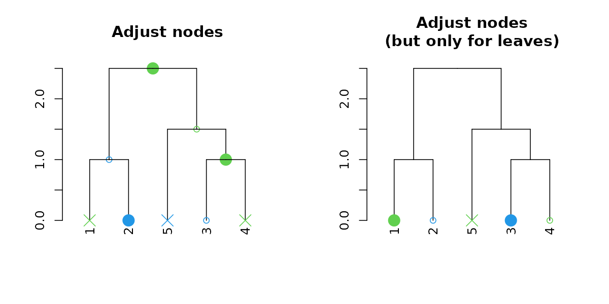
Notice how recycling works in a depth-first order (which is just left to right, when we only adjust the leaves). Here are the node’s parameters after adjustment:
dend15 %>% set("nodes_pch", c(19,1,4)) %>%
set("nodes_cex", c(2,1,2)) %>% set("nodes_col", c(3,4)) %>% get_nodes_attr("nodePar")#> [,1] [,2] [,3] [,4] [,5] [,6] [,7] [,8] [,9]
#> pch 19 1 4 19 1 4 19 1 4
#> cex 2 1 2 2 1 2 2 1 2
#> col 3 4 3 4 3 4 3 4 3We can also change the height of of the leaves by using the
hang.dendrogram function:
par(mfrow = c(1,3))
dend13 %>% set("leaves_pch", 19) %>% set("leaves_cex", 2) %>% set("leaves_col", 2) %>% # adjust the leaves
hang.dendrogram %>% # hang the leaves
plot(main = "Hanging a tree")
dend13 %>% set("leaves_pch", 19) %>% set("leaves_cex", 2) %>% set("leaves_col", 2) %>% # adjust the leaves
hang.dendrogram(hang_height = .6) %>% # hang the leaves (at some height)
plot(main = "Hanging a tree (but lower)")
dend13 %>% set("leaves_pch", 19) %>% set("leaves_cex", 2) %>% set("leaves_col", 2) %>% # adjust the leaves
hang.dendrogram %>% # hang the leaves
hang.dendrogram(hang = -1) %>% # un-hanging the leaves
plot(main = "Not hanging a tree")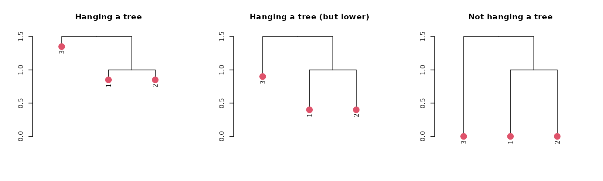
An example of what this function does to the leaves heights:
dend13 %>% get_leaves_attr("height")#> [1] 0 0 0
dend13 %>% hang.dendrogram %>% get_leaves_attr("height")#> [1] 1.35 0.85 0.85We can also control the general heights of nodes using
raise.dendrogram:
par(mfrow = c(1,3))
dend13 %>% plot(main = "First tree", ylim = c(0,3))
dend13 %>%
raise.dendrogram (-1) %>%
plot(main = "One point lower", ylim = c(0,3))
dend13 %>%
raise.dendrogram (1) %>%
plot(main = "One point higher", ylim = c(0,3))If you wish to make the branches under the root have the same height,
you can use the flatten.dendrogram function.
Setting a dendrogram’s branches
Adjusting all branches
Similar to adjusting nodes, we can also control line width (lwd), line type (lty), and color (col) for branches:
par(mfrow = c(1,3))
dend13 %>% set("branches_lwd", 4) %>% plot(main = "Thick branches")
dend13 %>% set("branches_lty", 3) %>% plot(main = "Dashed branches")
dend13 %>% set("branches_col", 2) %>% plot(main = "Red branches")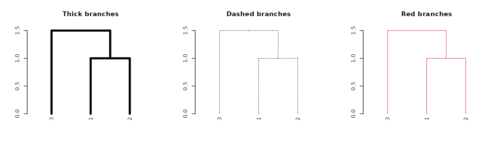
We may also use recycling to create more complex patterns:
# Produce a more complex dendrogram:
dend15 %>%
set("branches_lwd", c(4,1)) %>%
set("branches_lty", c(1,1,3)) %>%
set("branches_col", c(1,2,3)) %>%
plot(main = "Complex branches", edge.root = TRUE)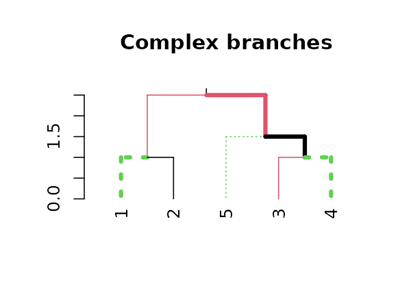
Notice how the first branch (the root) is considered when going
through and creating the tree, but it is ignored in the
actual plotting (this is actually a “missing feature” in
plot.dendrogram).
Coloring branches based on clustering
We may also control the colors of the branches based on using clustering:
par(mfrow = c(1,2))
dend15 %>% set("branches_k_color", k = 3) %>% plot(main = "Nice defaults")
dend15 %>% set("branches_k_color", value = 3:1, k = 3) %>%
plot(main = "Controlling branches' colors\n(via clustering)")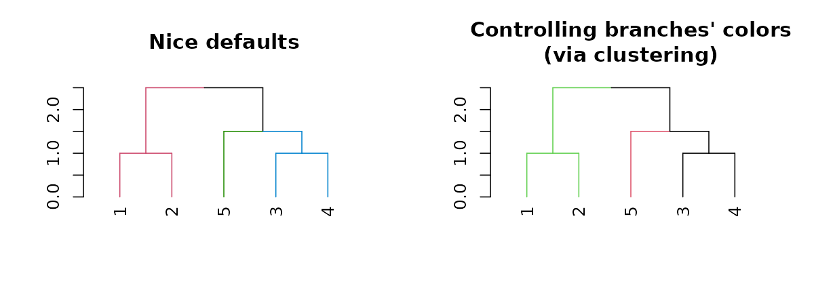
# This is like using the `color_branches` functionAdjusting branches based on labels
The most powerful way to control branches is through the
branches_attr_by_labels function (with variations through
the set function). The function allows you to change
col/lwd/lty of branches if they match some “labels condition”. Follow
carefully:
par(mfrow = c(1,2))
dend15 %>% set("by_labels_branches_col", value = c(1,4)) %>%
plot(main = "Adjust the branch\n if ALL (default) of its\n labels are in the list")
dend15 %>% set("by_labels_branches_col", value = c(1,4), type = "any") %>%
plot(main = "Adjust the branch\n if ANY of its\n labels are in the list")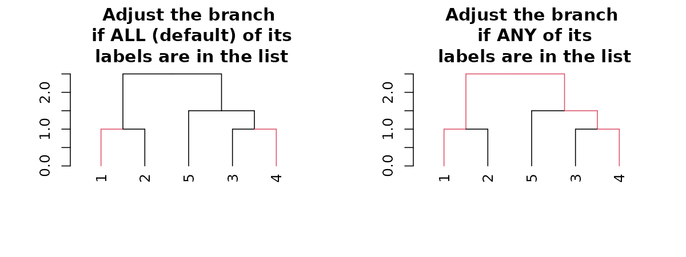
We can use this to change the size/type/color of the branches:
# Using "Inf" in "TF_values" means to let the parameters stay as they are.
par(mfrow = c(1,3))
dend15 %>% set("by_labels_branches_col", value = c(1,4), TF_values = c(3,Inf)) %>%
plot(main = "Change colors")
dend15 %>% set("by_labels_branches_lwd", value = c(1,4), TF_values = c(8,1)) %>%
plot(main = "Change line width")
dend15 %>% set("by_labels_branches_lty", value = c(1,4), TF_values = c(3,Inf)) %>%
plot(main = "Change line type")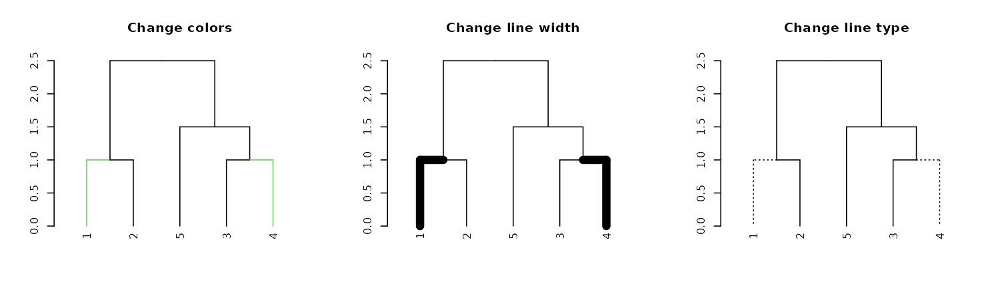
Highlighting branches’ different heights using line width and color
The highlight_branches function helps to more easily see
the topological structure of a tree, by adjusting branches appearence
(color and line width) based on their height in the tree. For
example:
dat <- iris[1:20,-5]
hca <- hclust(dist(dat))
hca2 <- hclust(dist(dat), method = "single")
dend <- as.dendrogram(hca)
dend2 <- as.dendrogram(hca2)
par(mfrow = c(1,3))
dend %>% highlight_branches_col %>% plot(main = "Coloring branches")
dend %>% highlight_branches_lwd %>% plot(main = "Emphasizing line-width")
dend %>% highlight_branches %>% plot(main = "Emphasizing color\n and line-width")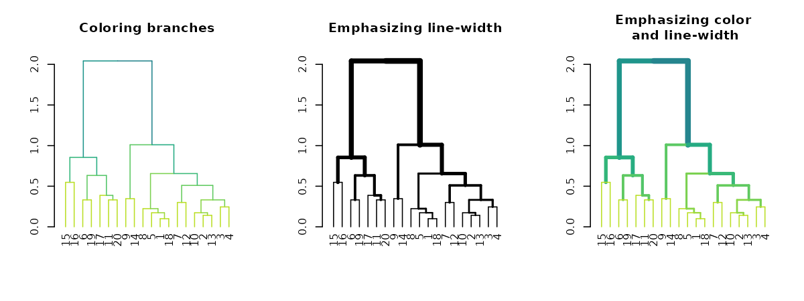
Tanglegrams are even easier to compare when using
#> Loading required package: viridisLite
par(mfrow = c(1,3))
dend %>% highlight_branches_col %>% plot(main = "Coloring branches \n (default is reversed viridis)")
dend %>% highlight_branches_col(viridis(100)) %>% plot(main = "It is better to use \n lighter colors in the leaves")
dend %>% highlight_branches_col(rev(magma(1000))) %>% plot(main = "The magma color pallatte\n is also good")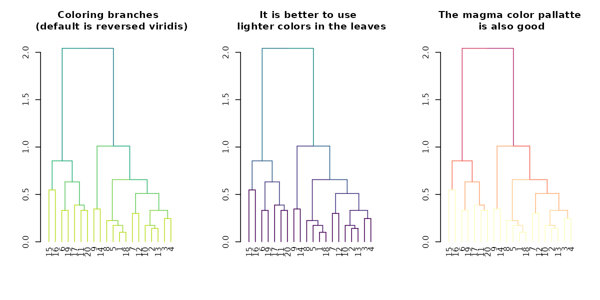
dl <- dendlist(dend, dend2)
tanglegram(dl, sort = TRUE, common_subtrees_color_lines = FALSE, highlight_distinct_edges = FALSE, highlight_branches_lwd = FALSE)
tanglegram(dl)
tanglegram(dl, fast = TRUE)
dl <- dendlist(highlight_branches(dend), highlight_branches(dend2))
tanglegram(dl, sort = TRUE, common_subtrees_color_lines = FALSE, highlight_distinct_edges = FALSE)
# dend %>% set("highlight_branches_col") %>% plot
dl <- dendlist(dend, dend2) %>% set("highlight_branches_col")
tanglegram(dl, sort = TRUE, common_subtrees_color_lines = FALSE, highlight_distinct_edges = FALSE)Changing a dendrogram’s structure
Rotation
A dendrogram is an object which can be rotated on its hinges without
changing its topology. Rotating a dendrogram in base R can be done using
the reorder function. The problem with this function is
that it is not very intuitive. For this reason the rotate
function was written. It has two main arguments: the “object” (a
dendrogram), and the “order” we wish to rotate it by. The “order”
parameter can be either a numeric vector, used in a similar way we would
order a simple character vector. Or, the order parameter can also be a
character vector of the labels of the tree, given in the new desired
order of the tree. It is also worth noting that some order are
impossible to achieve for a given tree’s topology. In such cases, the
function will do its “best” to get as close as possible to the requested
rotation.
par(mfrow = c(1,3))
dend15 %>%
set("labels_colors") %>%
set("branches_k_color") %>%
plot(main = "First tree")
dend15 %>%
set("labels_colors") %>%
set("branches_k_color") %>%
rotate(as.character(5:1)) %>% #rotate to match labels new order
plot(main = "Rotated tree\n based on labels")
dend15 %>%
set("labels_colors") %>%
set("branches_k_color") %>%
rotate(5:1) %>% # the fifth label to go first is "4"
plot(main = "Rotated tree\n based on order")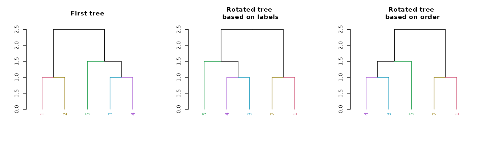
A new convenience S3 function for sort
(sort.dendrogram) was added:
dend110 <- c(1, 3:5, 7,9,10) %>% dist %>% hclust(method = "average") %>%
as.dendrogram %>% color_labels %>% color_branches
par(mfrow = c(1,3))
dend110 %>% plot(main = "Original tree")
dend110 %>% sort %>% plot(main = "labels sort")
dend110 %>% sort(type = "nodes") %>% plot(main = "nodes (ladderize) sort")
Unbranching
We can unbranch a tree:
par(mfrow = c(1,3))
dend15 %>% plot(main = "First tree", ylim = c(0,3))
dend15 %>%
unbranch %>%
plot(main = "Unbranched tree", ylim = c(0,3))
dend15 %>%
unbranch(2) %>%
plot(main = "Unbranched tree (2)", ylim = c(0,3))
Pruning
We can prune a tree based on the labels:
par(mfrow = c(1,2))
dend15 %>% set("labels_colors") %>%
plot(main = "First tree", ylim = c(0,3))
dend15 %>% set("labels_colors") %>%
prune(c("1","5")) %>%
plot(main = "Prunned tree", ylim = c(0,3))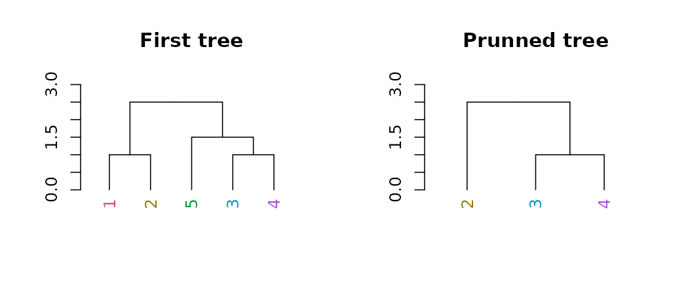
For pruning two trees to have matching labels, we can use the
intersect_trees function:
par(mfrow = c(1,2))
dend_intersected <- intersect_trees(dend13, dend15)
dend_intersected[[1]] %>% plot
dend_intersected[[2]] %>% plotCollapse branches
We can collapse branches under a tolerance level using the
collapse_branch function:
# ladderize is like sort(..., type = "node")
dend <- iris[1:5,-5] %>% dist %>% hclust %>% as.dendrogram
par(mfrow = c(1,3))
dend %>% ladderize %>% plot(horiz = TRUE); abline(v = .2, col = 2, lty = 2)
dend %>% collapse_branch(tol = 0.2) %>% ladderize %>% plot(horiz = TRUE)
dend %>% collapse_branch(tol = 0.2) %>% ladderize %>% hang.dendrogram(hang = 0) %>% plot(horiz = TRUE)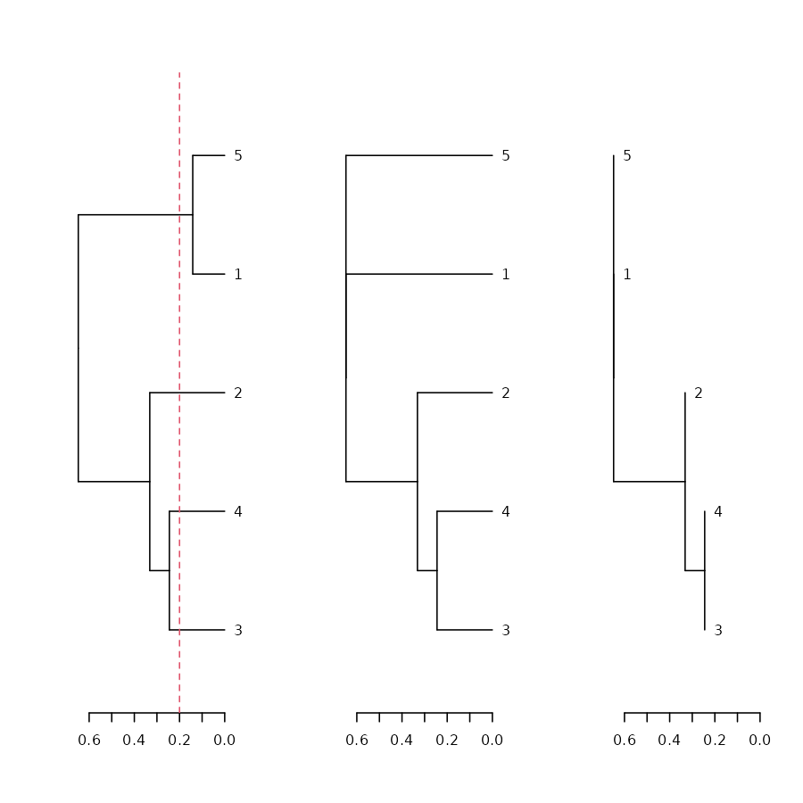
Adding extra bars and rectangles
Adding colored rectangles
Earlier we have seen how to highlight clusters in a dendrogram by
coloring branches. We can also draw rectangles around the branches of a
dendrogram in order to highlight the corresponding clusters. First the
dendrogram is cut at a certain level, then a rectangle is drawn around
selected branches. This is done using the rect.dendrogram,
which is modeled based on the rect.hclust function. One
advantage of rect.dendrogram over rect.hclust,
is that it also works on horizontally plotted trees:
layout(t(c(1,1,1,2,2)))
dend15 %>% set("branches_k_color") %>% plot
dend15 %>% rect.dendrogram(k=3,
border = 8, lty = 5, lwd = 2)
dend15 %>% set("branches_k_color") %>% plot(horiz = TRUE)
dend15 %>% rect.dendrogram(k=3, horiz = TRUE,
border = 8, lty = 5, lwd = 2)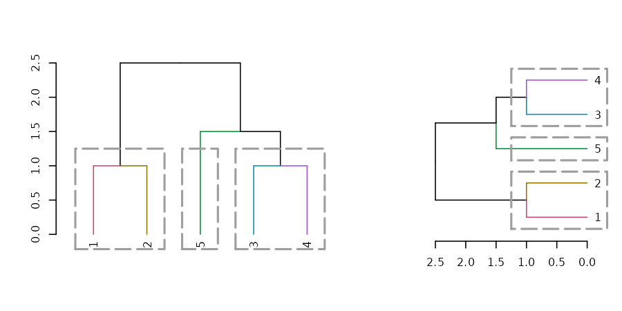
Adding colored bars
Adding colored bars to a dendrogram may be useful to show clusters or some outside categorization of the items. For example:
is_odd <- ifelse(labels(dend15) %% 2, 2,3)
is_345 <- ifelse(labels(dend15) > 2, 3,4)
is_12 <- ifelse(labels(dend15) <= 2, 3,4)
k_3 <- cutree(dend15,k = 3, order_clusters_as_data = FALSE)
# The FALSE above makes sure we get the clusters in the order of the
# dendrogram, and not in that of the original data. It is like:
# cutree(dend15, k = 3)[order.dendrogram(dend15)]
the_bars <- cbind(is_odd, is_345, is_12, k_3)
the_bars[the_bars==2] <- 8
dend15 %>% plot
colored_bars(colors = the_bars, dend = dend15, sort_by_labels_order = FALSE)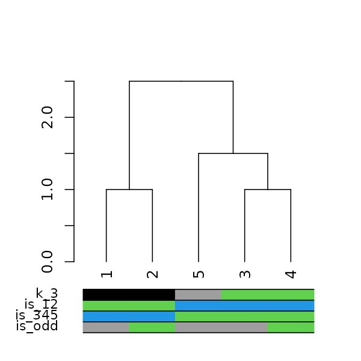
# we use sort_by_labels_order = FALSE since "the_bars" were set based on the
# labels order. The more common use case is when the bars are based on a second variable
# from the same data.frame as dend was created from. Thus, the default
# sort_by_labels_order = TRUE would make more sense.Another example, based on mtcars (in which the default of
sort_by_labels_order = TRUE makes sense):
dend_mtcars <- mtcars[, c("mpg", "disp")] %>% dist %>% hclust(method = "average") %>% as.dendrogram
par(mar = c(10,2,1,1))
plot(dend_mtcars)
the_bars <- ifelse(mtcars$am, "grey", "gold")
colored_bars(colors = the_bars, dend = dend_mtcars, rowLabels = "am")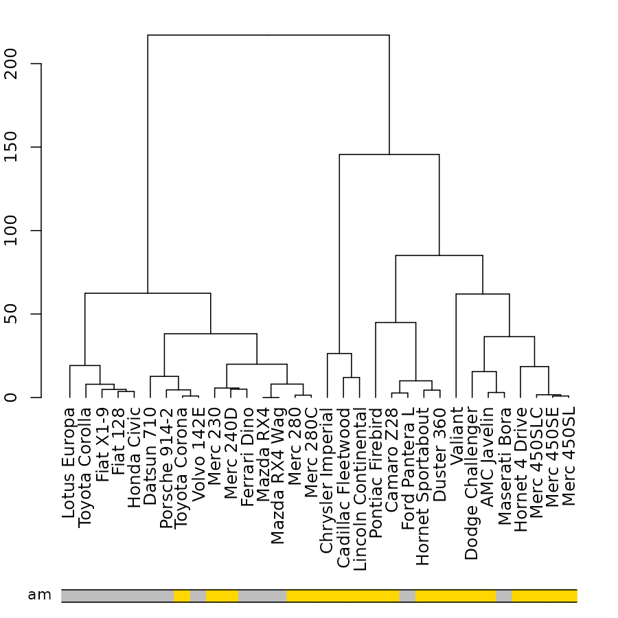
ggplot2 integration
The core process is to transform a dendrogram into a
ggdend object using as.ggdend, and then plot
it using ggplot (a new S3 ggplot.ggdend
function is available). These two steps can be done in one command with
either the function ggplot or ggdend.
The reason we want to have as.ggdend (and not only
ggplot.dendrogram), is (1) so that you could create your
own mapping of ggdend and, (2) since as.ggdend
might be slow for large trees, it is probably better to be able to run
it only once for such cases.
A ggdend class object is a list with 3 components:
segments, labels, nodes. Each one contains the graphical parameters from
the original dendrogram, but in a tabular form that can be used by
ggplot2+geom_segment+geom_text to create a dendrogram
plot.
The function prepare.ggdend is used by
plot.ggdend to take the ggdend object and prepare it for
plotting. This is because the defaults of various parameters in
dendrogram’s are not always stored in the object itself, but are
built-in into the plot.dendrogram function. For example,
the color of the labels is not (by default) specified in the dendrogram
(only if we change it from black to something else). Hence, when taking
the object into a different plotting engine (say ggplot2), we want to
prepare the object by filling-in various defaults. This function is
automatically invoked within the plot.ggdend function. You
would probably use it only if you’d wish to build your own ggplot2
mapping.
# Create a complex dend:
dend <- iris[1:30,-5] %>% dist %>% hclust %>% as.dendrogram %>%
set("branches_k_color", k=3) %>% set("branches_lwd", c(1.5,1,1.5)) %>%
set("branches_lty", c(1,1,3,1,1,2)) %>%
set("labels_colors") %>% set("labels_cex", c(.9,1.2)) %>%
set("nodes_pch", 19) %>% set("nodes_col", c("orange", "black", "plum", NA))
# plot the dend in usual "base" plotting engine:
plot(dend)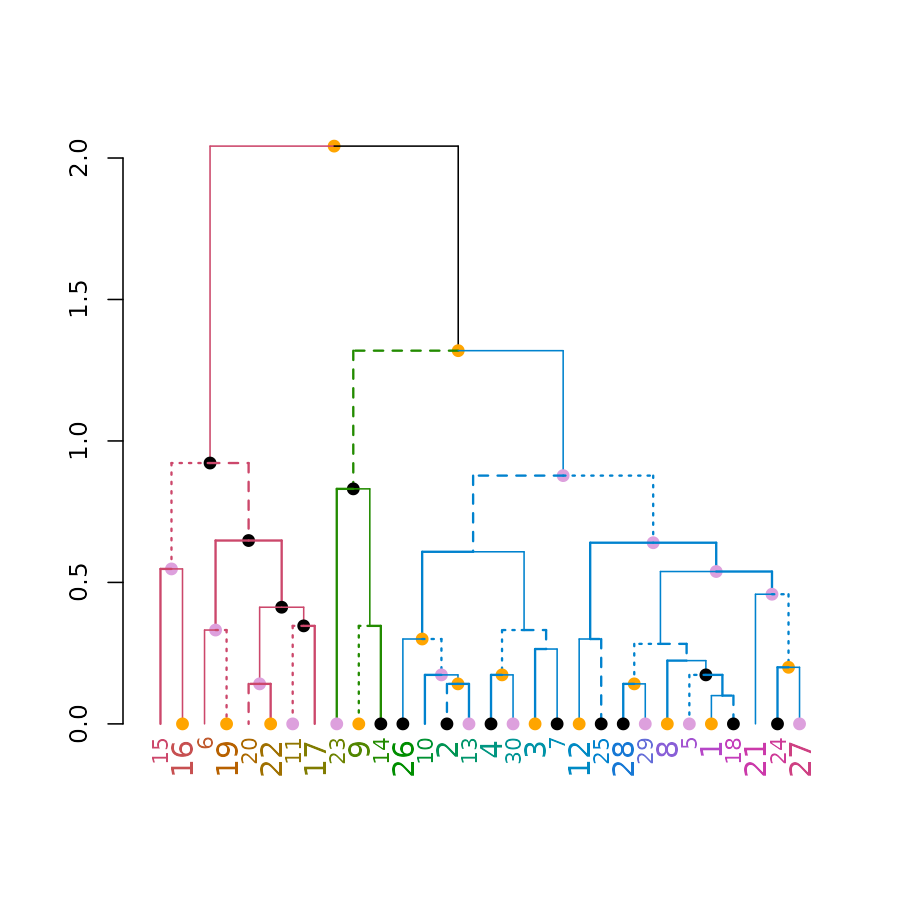
# Now let's do it in ggplot2 :)
ggd1 <- as.ggdend(dend)
library(ggplot2)
# the nodes are not implemented yet.
ggplot(ggd1) # reproducing the above plot in ggplot2 :)
ggplot(ggd1, horiz = TRUE, theme = NULL) # horiz plot (and let's remove theme) in ggplot2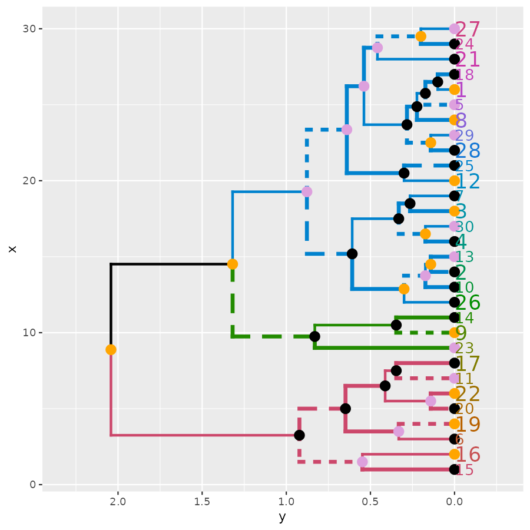
# Adding some extra spice to it...
# creating a radial plot:
# ggplot(ggd1) + scale_y_reverse(expand = c(0.2, 0)) + coord_polar(theta="x")
# The text doesn't look so great, so let's remove it:
ggplot(ggd1, labels = FALSE) + scale_y_reverse(expand = c(0.2, 0)) + coord_polar(theta="x")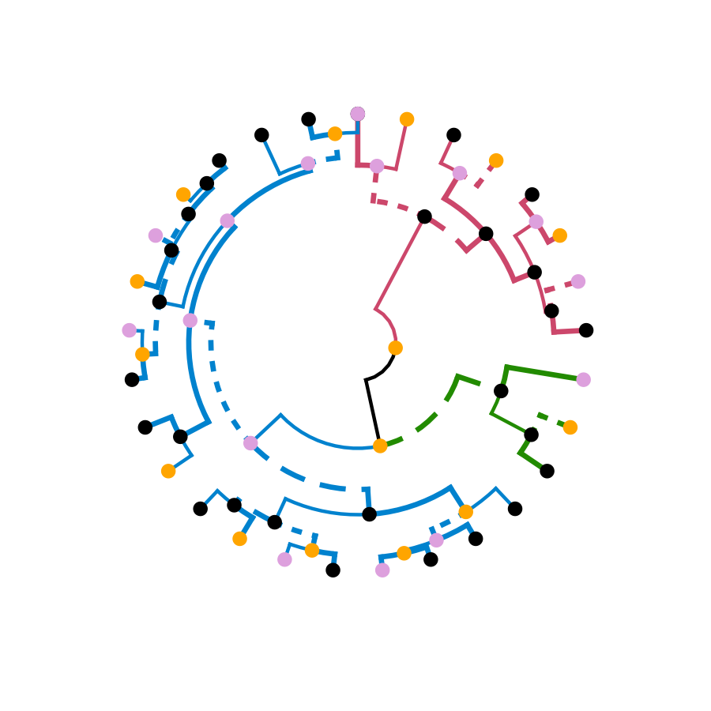
Credit: These functions are extended
versions of the functions ggdendrogram,
dendro_data (and the hidden dendrogram_data)
from Andrie de Vries’s ggdendro package.
The motivation for this fork is the need to add more graphical
parameters to the plotted tree. This required a strong mixture of
functions from ggdendro and dendextend (to the point that it seemed
better to just fork the code into its current form).
Enhancing other packages
The dendextend package aims to extend and enhance features from the R ecosystem. Let us take a look at several examples.
DendSer
The DendSer package helps in re-arranging a dendrogram to optimize
visualization-based cost functions. Until now it was only used for
hclust objects, but it can easily be connected to
dendrogram objects by trying to turn the dendrogram into
hclust, on which it runs DendSer. This can be used to rotate the
dendrogram easily by using the rotate_DendSer function:
if(require(DendSer)) {
par(mfrow = c(1,2))
DendSer.dendrogram(dend15)
dend15 %>% color_branches %>% plot
dend15 %>% color_branches %>% rotate_DendSer %>% plot
}#> Loading required package: DendSer#> Loading required package: gclus#> Loading required package: cluster#>
#> Attaching package: 'gclus'#> The following object is masked from 'package:dendextend':
#>
#> order.hclust#> Loading required package: seriation#> Registered S3 method overwritten by 'seriation':
#> method from
#> reorder.hclust gclus
gplots
The gplots package brings us the heatmap.2 function. In
it, we can use our modified dendrograms to get more informative
heat-maps:
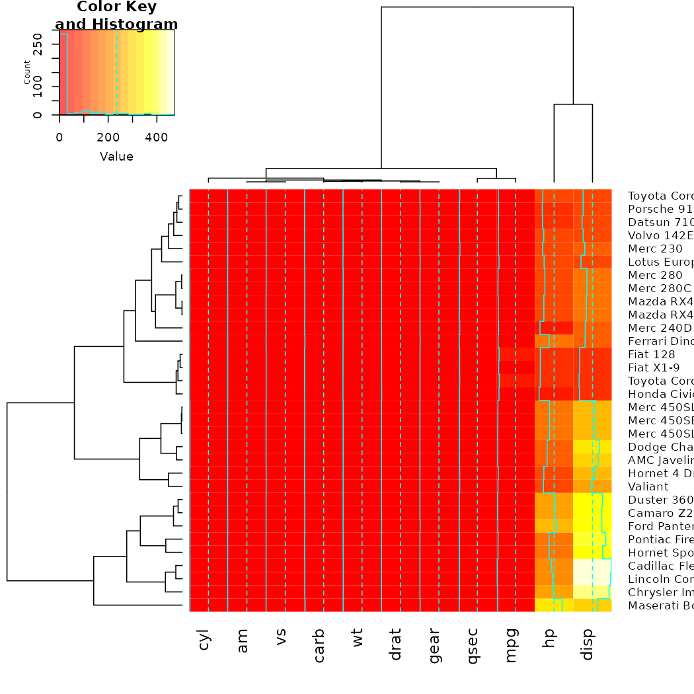
# now let's spice up the dendrograms a bit:
Rowv <- x %>% dist %>% hclust %>% as.dendrogram %>%
set("branches_k_color", k = 3) %>% set("branches_lwd", 4) %>%
ladderize
# rotate_DendSer(ser_weight = dist(x))
Colv <- x %>% t %>% dist %>% hclust %>% as.dendrogram %>%
set("branches_k_color", k = 2) %>% set("branches_lwd", 4) %>%
ladderize
# rotate_DendSer(ser_weight = dist(t(x)))
heatmap.2(x, Rowv = Rowv, Colv = Colv)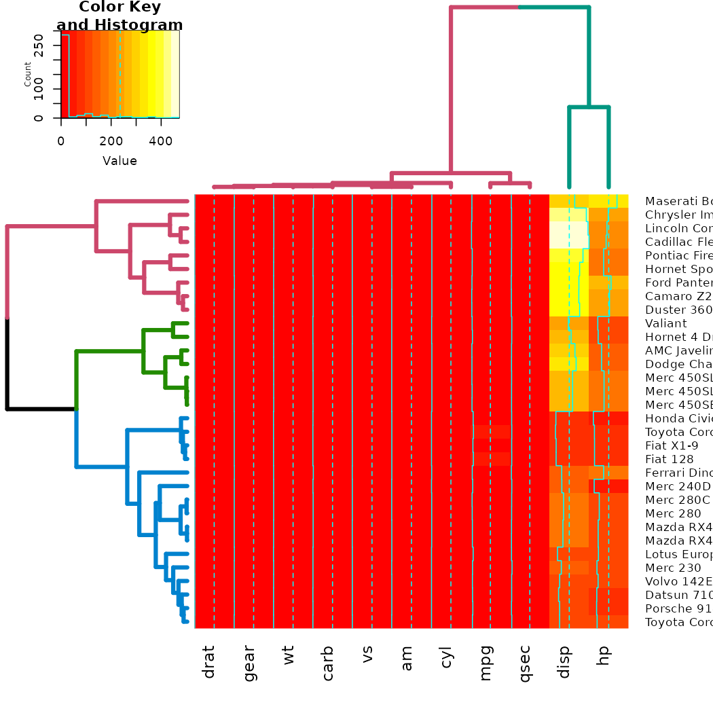
NMF
The same as gplots, NMF offers a heatmap function called
aheatmap. We can update it just as we would
heatmap.2.
Since NMF was removed from CRAN (it could still be installed from source), the example code is still available but not ran in this vignette.
# library(NMF)
#
# x <- as.matrix(datasets::mtcars)
#
# # now let's spice up the dendrograms a bit:
# Rowv <- x %>% dist %>% hclust %>% as.dendrogram %>%
# set("branches_k_color", k = 3) %>% set("branches_lwd", 4) %>%
# ladderize
# # rotate_DendSer(ser_weight = dist(x))
# Colv <- x %>% t %>% dist %>% hclust %>% as.dendrogram %>%
# set("branches_k_color", k = 2) %>% set("branches_lwd", 4) %>%
# ladderize
# # rotate_DendSer(ser_weight = dist(t(x)))
#
# aheatmap(x, Rowv = Rowv, Colv = Colv)heatmaply
The heatmaply package create interactive heat-maps that are usable from the R console, in the ‘RStudio’ viewer pane, in ‘R Markdown’ documents, and in ‘Shiny’ apps. By hovering the mouse pointer over a cell or a dendrogram to show details, drag a rectangle to zoom.
The use is very similar to what we’ve seen before, we just use
heatmaply instead of heatmap.2:
x <- as.matrix(datasets::mtcars)
# heatmaply(x)
# now let's spice up the dendrograms a bit:
Rowv <- x %>% dist %>% hclust %>% as.dendrogram %>%
set("branches_k_color", k = 3) %>% set("branches_lwd", 4) %>%
ladderize
# rotate_DendSer(ser_weight = dist(x))
Colv <- x %>% t %>% dist %>% hclust %>% as.dendrogram %>%
set("branches_k_color", k = 2) %>% set("branches_lwd", 4) %>%
ladderize
# rotate_DendSer(ser_weight = dist(t(x)))Here we need to use cache=FALSe in the markdown:
I avoided running the code from above due to space issues on CRAN. For live examples, please go to:
dynamicTreeCut
The cutreeDynamic function offers a wrapper for two
methods of adaptive branch pruning of hierarchical clustering
dendrograms. The results of which can now be visualized by both updating
the branches, as well as using the colored_bars function
(which was adjusted for use with plots of dendrograms):
# let's get the clusters
library(dynamicTreeCut)
data(iris)
x <- iris[,-5] %>% as.matrix
hc <- x %>% dist %>% hclust
dend <- hc %>% as.dendrogram
# Find special clusters:
clusters <- cutreeDynamic(hc, distM = as.matrix(dist(x)), method = "tree")
# we need to sort them to the order of the dendrogram:
clusters <- clusters[order.dendrogram(dend)]
clusters_numbers <- unique(clusters) - (0 %in% clusters)
n_clusters <- length(clusters_numbers)
library(colorspace)
cols <- rainbow_hcl(n_clusters)
true_species_cols <- rainbow_hcl(3)[as.numeric(iris[,][order.dendrogram(dend),5])]
dend2 <- dend %>%
branches_attr_by_clusters(clusters, values = cols) %>%
color_labels(col = true_species_cols)
plot(dend2)
clusters <- factor(clusters)
levels(clusters)[-1] <- cols[-5][c(1,4,2,3)]
# Get the clusters to have proper colors.
# fix the order of the colors to match the branches.
colored_bars(clusters, dend, sort_by_labels_order = FALSE)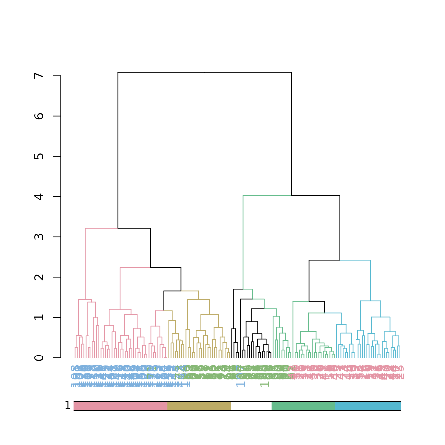
# here we used sort_by_labels_order = FALSE since the clusters were already sorted based on the dendrogram's orderpvclust
The pvclust library calculates “p-values”” for hierarchical clustering via multiscale bootstrap re-sampling. Hierarchical clustering is done for given data and p-values are computed for each of the clusters. The dendextend package let’s us reproduce the plot from pvclust, but with a dendrogram (instead of an hclust object), which also lets us extend the visualization.
par(mfrow = c(1,2))
library(pvclust)
data(lung) # 916 genes for 73 subjects
set.seed(13134)
result <- pvclust(lung[1:100, 1:10],
method.dist="cor", method.hclust="average", nboot=10)
# with pvrect
plot(result)
pvrect(result)
# with a dendrogram of pvrect
dend <- as.dendrogram(result)
result %>% as.dendrogram %>%
plot(main = "Cluster dendrogram with AU/BP values (%)\n reproduced plot with dendrogram")
result %>% text
result %>% pvrect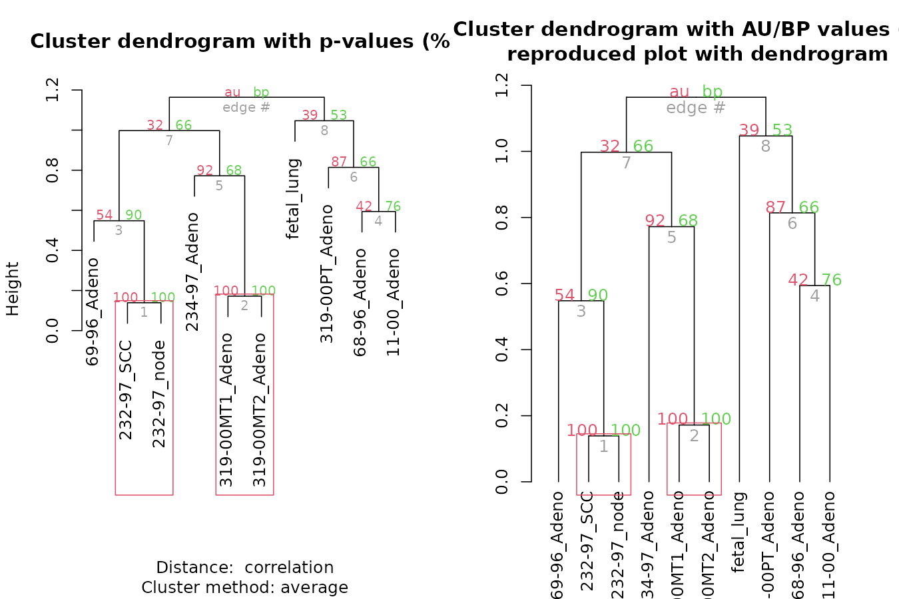
Let’s color and thicken the branches based on the p-values:
par(mfrow = c(2,2))
# with a modified dendrogram of pvrect
dend %>% pvclust_show_signif(result) %>%
plot(main = "Cluster dendrogram \n bp values are highlighted by signif")
dend %>% pvclust_show_signif(result, show_type = "lwd") %>%
plot(main = "Cluster dendrogram with AU/BP values (%)\n bp values are highlighted by signif")
result %>% text
result %>% pvrect(alpha=0.95)
dend %>% pvclust_show_signif_gradient(result) %>%
plot(main = "Cluster dendrogram with AU/BP values (%)\n bp values are colored by signif")
dend %>%
pvclust_show_signif_gradient(result) %>%
pvclust_show_signif(result) %>%
plot(main = "Cluster dendrogram with AU/BP values (%)\n bp values are colored+highlighted by signif")
result %>% text
result %>% pvrect(alpha=0.95)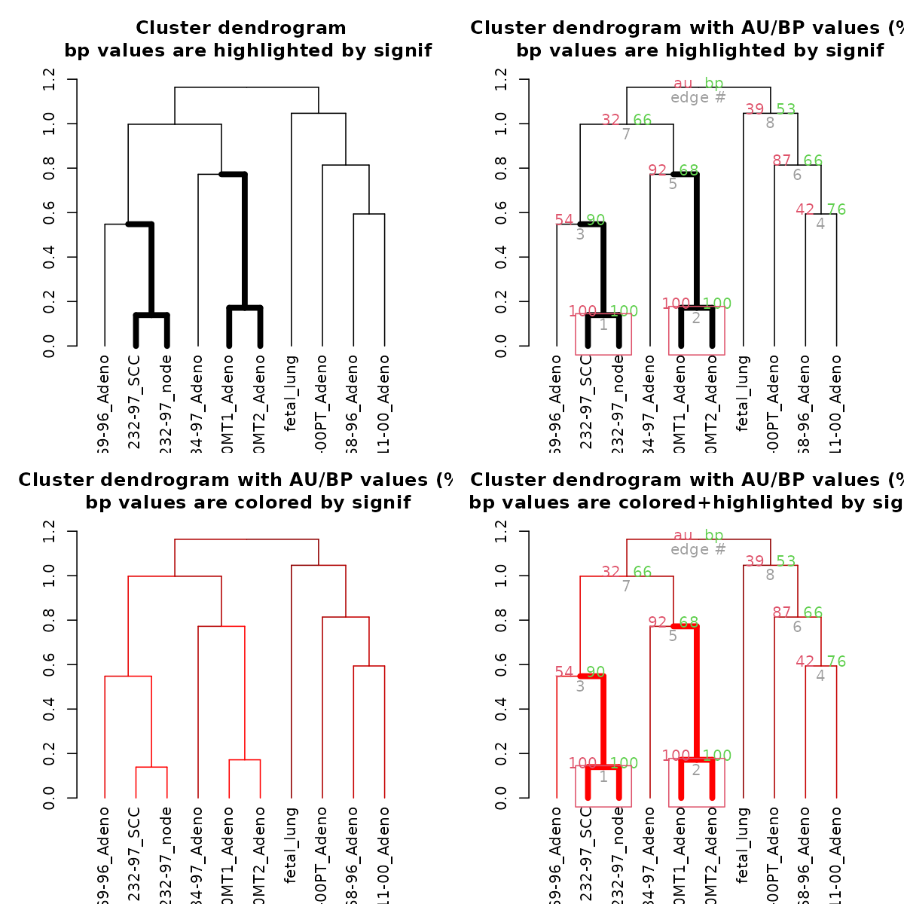
circlize
Circular layout is an efficient way for the visualization of huge amounts of information. The circlize package provides an implementation of circular layout generation in R, including a solution for dendrogram objects produced using dendextend:
#> ========================================
#> circlize version 0.4.15
#> CRAN page: https://cran.r-project.org/package=circlize
#> Github page: https://github.com/jokergoo/circlize
#> Documentation: https://jokergoo.github.io/circlize_book/book/
#>
#> If you use it in published research, please cite:
#> Gu, Z. circlize implements and enhances circular visualization
#> in R. Bioinformatics 2014.
#>
#> This message can be suppressed by:
#> suppressPackageStartupMessages(library(circlize))
#> ========================================
dend <- iris[1:40,-5] %>% dist %>% hclust %>% as.dendrogram %>%
set("branches_k_color", k=3) %>% set("branches_lwd", c(5,2,1.5)) %>%
set("branches_lty", c(1,1,3,1,1,2)) %>%
set("labels_colors") %>% set("labels_cex", c(.6,1.5)) %>%
set("nodes_pch", 19) %>% set("nodes_col", c("orange", "black", "plum", NA))
par(mar = rep(0,4))
circlize_dendrogram(dend)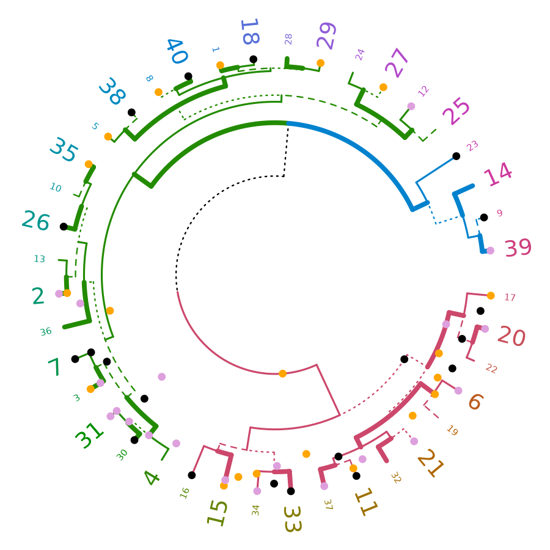
# circlize_dendrogram(dend, labels = FALSE)
# circlize_dendrogram(dend, facing = "inside", labels = FALSE)The above is a wrapper for functions in circlize. An advantage for using the circlize package directly is for plotting a circular dendrogram so that you can add more graphics for the elements in the tree just by adding more tracks using . For example:
# dend <- iris[1:40,-5] %>% dist %>% hclust %>% as.dendrogram %>%
# set("branches_k_color", k=3) %>% set("branches_lwd", c(5,2,1.5)) %>%
# set("branches_lty", c(1,1,3,1,1,2)) %>%
# set("labels_colors") %>% set("labels_cex", c(.9,1.2)) %>%
# set("nodes_pch", 19) %>% set("nodes_col", c("orange", "black", "plum", NA))
set.seed(2015-07-10)
# In the following we get the dendrogram but can also get extra information on top of it
circos.initialize("foo", xlim = c(0, 40))
circos.track(ylim = c(0, 1), panel.fun = function(x, y) {
circos.rect(1:40-0.8, rep(0, 40), 1:40-0.2, runif(40), col = rand_color(40), border = NA)
}, bg.border = NA)
circos.track(ylim = c(0, 1), panel.fun = function(x, y) {
circos.text(1:40-0.5, rep(0, 40), labels(dend), col = labels_colors(dend),
facing = "clockwise", niceFacing = TRUE, adj = c(0, 0.5))
}, bg.border = NA, track.height = 0.1)
max_height = attr(dend, "height")
circos.track(ylim = c(0, max_height), panel.fun = function(x, y) {
circos.dendrogram(dend, max_height = max_height)
}, track.height = 0.5, bg.border = NA)
Comparing two dendrograms
dendlist
A dendlist is a function which produces the dendlist
class. It accepts several dendrograms and/or dendlist objects and chain
them all together. This function aim to help with the usability of
comparing two or more dendrograms.
dend15 <- c(1:5) %>% dist %>% hclust(method = "average") %>% as.dendrogram
dend15 <- dend15 %>% set("labels_to_char")
dend51 <- dend15 %>% set("labels", as.character(5:1)) %>% match_order_by_labels(dend15)
dends_15_51 <- dendlist(dend15, dend51)
dends_15_51#> [[1]]
#> 'dendrogram' with 2 branches and 5 members total, at height 2.5
#>
#> [[2]]
#> 'dendrogram' with 2 branches and 5 members total, at height 2.5
#>
#> attr(,"class")
#> [1] "dendlist"
head(dends_15_51)#> ============
#> dend 1
#> ---------
#> --[dendrogram w/ 2 branches and 5 members at h = 2.5]
#> |--[dendrogram w/ 2 branches and 2 members at h = 1]
#> | |--leaf "1"
#> | `--leaf "2"
#> `--[dendrogram w/ 2 branches and 3 members at h = 1.5]
#> |--leaf "5"
#> `--[dendrogram w/ 2 branches and 2 members at h = 1]
#> |--leaf "3"
#> `--leaf "4"
#> etc...
#> ============
#> dend 2
#> ---------
#> --[dendrogram w/ 2 branches and 5 members at h = 2.5]
#> |--[dendrogram w/ 2 branches and 2 members at h = 1]
#> | |--leaf "5"
#> | `--leaf "4"
#> `--[dendrogram w/ 2 branches and 3 members at h = 1.5]
#> |--leaf "3"
#> `--[dendrogram w/ 2 branches and 2 members at h = 1]
#> |--leaf "2"
#> `--leaf "1"
#> etc...The function match_order_by_labels makes sure that the
order in the leaves corresponds to the same labels in both trees.
dend_diff
The dend_diff function plots two trees side by side,
highlighting edges unique to each tree in red, it relies on the
distinct_edges function.
For example:
# example 1
x <- 1:5 %>% dist %>% hclust %>% as.dendrogram
y <- set(x, "labels", 5:1)
# example 2
dend1 <- 1:10 %>% dist %>% hclust %>% as.dendrogram
dend2 <- dend1 %>% set("labels", c(1,3,2,4, 5:10) )
dend_diff(dend1, dend2)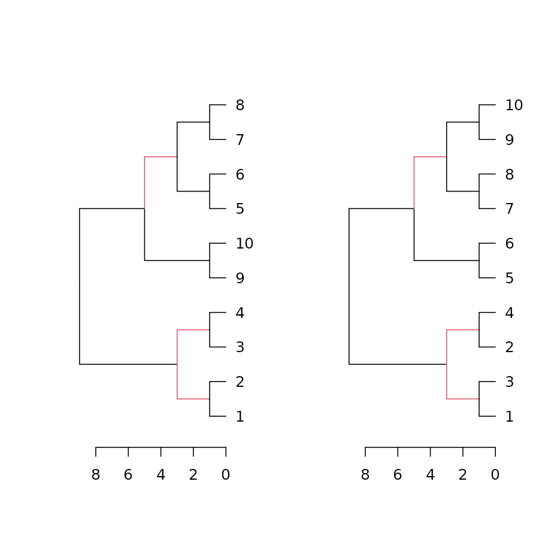
See the highlight_distinct_edges function for more
control over how to create the distinction (color, line width, line
type).
tanglegram
A tanglegram plot gives two dendrogram (with the same set of labels), one facing the other, and having their labels connected by lines. Tanglegram can be used for visually comparing two methods of Hierarchical clustering, and are sometimes used in biology when comparing two phylogenetic trees.
Here is an example of creating a tanglegram using dendextend:
tanglegram(dends_15_51)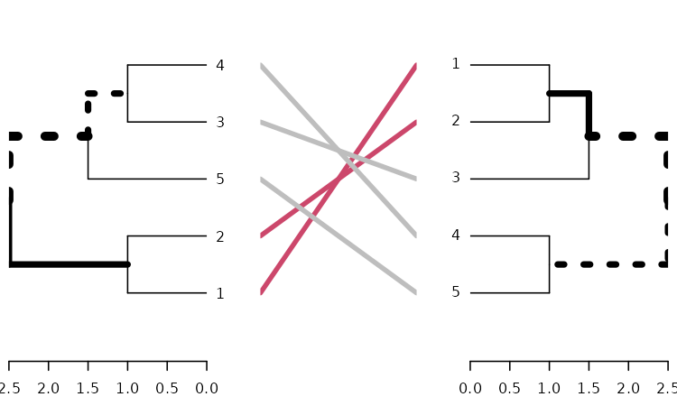
# Same as using:
# plot(dends_15_51) # since there is a plot method for dendlist
# and also:
# tanglegram(dend15, dend51)Notice how “unique” nodes are highlighted with dashed lines (i.e.:
nodes which contains a combination of labels/items, which are not
present in the other tree). This can be turned off using
highlight_distinct_edges = FALSE. Also notice how the
connecting lines are colored to highlight two sub-trees which are
present in both dendrograms. This can be turned off by setting
common_subtrees_color_lines = FALSE. We can also color the
branches of the trees to show the two common sub-trees using
common_subtrees_color_branches = TRUE:
tanglegram(dends_15_51, common_subtrees_color_branches = TRUE)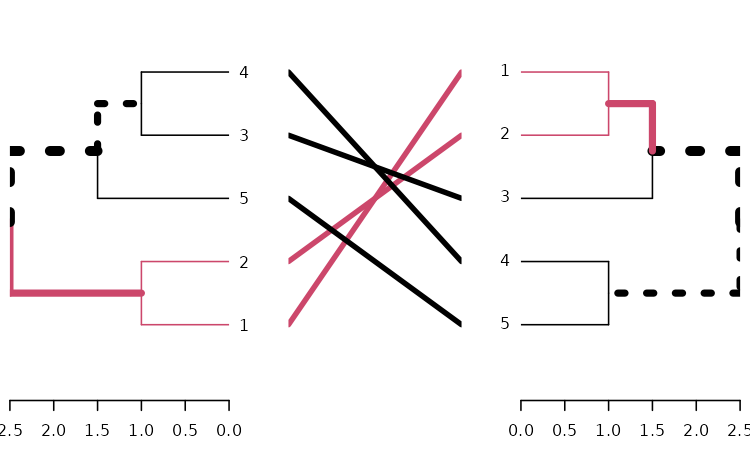
We may wish to improve the layout of the trees. For this we have the
entanglement, to measure the quality of the alignment of
the two trees in the tanglegram layout, and the untangle
function, for improving it.
dends_15_51 %>% entanglement # lower is better#> [1] 0.9167078
# dends_15_51 %>% untangle(method = "DendSer") %>% entanglement # lower is better
dends_15_51 %>% untangle(method = "step1side") %>% entanglement # lower is better#> [1] 0Notice that just because we can get two trees to have horizontal connecting lines, it doesn’t mean these trees are identical (or even very similar topologically):
dends_15_51 %>% untangle(method = "step1side") %>%
tanglegram(common_subtrees_color_branches = TRUE)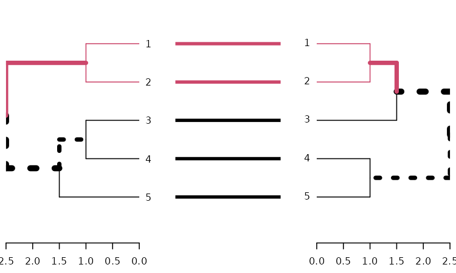
Entanglement is measured by giving the left tree’s labels the values
of 1 till tree size, and than match these numbers with the right tree.
Now, entanglement is the L norm distance between these two vectors. That
is, we take the sum of the absolute difference (each one in the power of
L). e.g: sum(abs(x-y)**L). And this is divided by the
“worst case” entanglement level (e.g: when the right tree is the
complete reverse of the left tree).
L tells us which penalty level we are at (L0, L1, L2, partial L’s etc). L>1 means that we give a big penalty for sharp angles. While L->0 means that any time something is not a straight horizontal line, it gets a large penalty If L=0.1 it means that we much prefer straight lines over non straight lines
Finding an optimal rotation for the tanglegram of two dendrogram is a hard problem. This problem is also harder for larger trees.
Let’s see how well some untangle methods can do.
Without doing anything:
x <- dends_15_51
x %>% plot(main = paste("entanglement =", round(entanglement(x), 2)))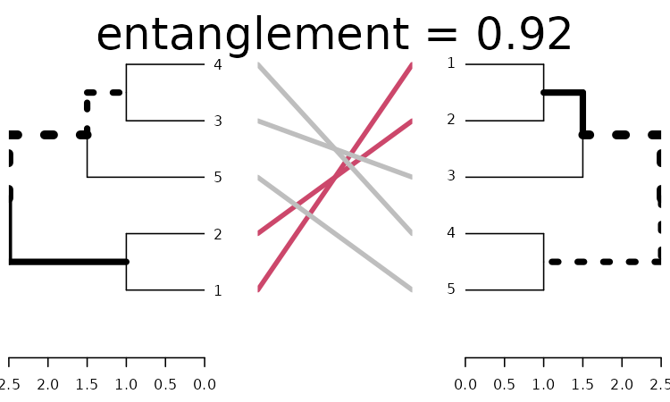
Using DendSer:
# x <- dends_15_51 %>% untangle(method = "DendSer")
x <- dends_15_51 %>% untangle(method = "ladderize")
x %>% plot(main = paste("entanglement =", round(entanglement(x), 2)))
One solution for improving the tanglegram would be to randomly search the rotated tree space for a better solution. Here is how to use a random search:
set.seed(3958)
x <- dends_15_51 %>% untangle(method = "random", R = 10)
x %>% plot(main = paste("entanglement =", round(entanglement(x), 2)))
We can see we already got something better. An advantage of the random search is the ability to create many many trees and compare them to find the best pair.
Let’s use a greedy forward step wise rotation of the two trees (first the left, then the right, and so on), to see if we can find a better solution for comparing the two trees. Notice that this may take some time to run (the larger the tree, the longer it would take), but we can limit the search for smaller k’s, and see what improvement that can bring us using step2side (slowest):
x <- dends_15_51 %>% untangle(method = "step2side")
x %>% plot(main = paste("entanglement =", round(entanglement(x), 2)))
We got perfect entanglement (0).
Correlation measures
We shall use the following for the upcoming examples:
set.seed(23235)
ss <- sample(1:150, 10 )
dend1 <- iris[ss,-5] %>% dist %>% hclust("com") %>% as.dendrogram
dend2 <- iris[ss,-5] %>% dist %>% hclust("single") %>% as.dendrogram
dend3 <- iris[ss,-5] %>% dist %>% hclust("ave") %>% as.dendrogram
dend4 <- iris[ss,-5] %>% dist %>% hclust("centroid") %>% as.dendrogram
dend1234 <- dendlist("Complete" = dend1, "Single" = dend2, "Average" = dend3, "Centroid" = dend4)
par(mfrow = c(2,2))
plot(dend1, main = "Complete")
plot(dend2, main = "Single")
plot(dend3, main = "Average")
plot(dend4, main = "Centroid")Global Comparison of two (or more) dendrograms
The all.equal.dendrogram function makes a global
comparison of two or more dendrograms trees.
all.equal(dend1, dend1)#> [1] TRUE
all.equal(dend1, dend2)#> [1] "Difference in branch heights - Mean relative difference: 0.4932164"
all.equal(dend1, dend2, use.edge.length = FALSE)#> [1] "Dendrograms contain diffreent edges (i.e.: topology). Unique edges in target: | 2, 7, 13 | Unique edges in current: 7, 9, 11"
all.equal(dend1, dend2, use.edge.length = FALSE, use.topology = FALSE)#> [1] TRUE
all.equal(dend2, dend4, use.edge.length = TRUE)#> [1] "Difference in branch heights - Mean relative difference: 0.1969642"
all.equal(dend2, dend4, use.edge.length = FALSE)#> [1] "Dendrograms contain diffreent edges (i.e.: topology). Unique edges in target: | 11 | Unique edges in current: 13"#> [1] TRUE
all.equal(dend1234)#> 1==2
#> "Difference in branch heights - Mean relative difference: 0.4932164"
#> 1==3
#> "Difference in branch heights - Mean relative difference: 0.2767035"
#> 1==4
#> "Difference in branch heights - Mean relative difference: 0.4081231"
#> 2==3
#> "Difference in branch heights - Mean relative difference: 0.4545673"
#> 2==4
#> "Difference in branch heights - Mean relative difference: 0.1969642"
#> 3==4
#> "Difference in branch heights - Mean relative difference: 0.1970749"
all.equal(dend1234, use.edge.length = FALSE)#> 1==2
#> "Dendrograms contain diffreent edges (i.e.: topology). Unique edges in target: | 2, 7, 13 | Unique edges in current: 7, 9, 11"
#> 1==3
#> "Dendrograms contain diffreent edges (i.e.: topology). Unique edges in target: | 7 | Unique edges in current: 7"
#> 1==4
#> "Dendrograms contain diffreent edges (i.e.: topology). Unique edges in target: | 2, 7 | Unique edges in current: 7, 9"
#> 2==3
#> "Dendrograms contain diffreent edges (i.e.: topology). Unique edges in target: | 9, 11 | Unique edges in current: 8, 15"
#> 2==4
#> "Dendrograms contain diffreent edges (i.e.: topology). Unique edges in target: | 11 | Unique edges in current: 13"
#> 3==4
#> "Dendrograms contain diffreent edges (i.e.: topology). Unique edges in target: | 15 | Unique edges in current: 9"Distance matrix using dist.dendlist
The dist.dendlist function computes the Robinson-Foulds
distance (also known as symmetric difference) between two dendrograms.
This is the sum of edges in both trees with labels that exist in only
one of the two trees (i.e.: the length of
distinct_edges).
x <- 1:5 %>% dist %>% hclust %>% as.dendrogram
y <- set(x, "labels", 5:1)
dist.dendlist(dendlist(x1 = x,x2 = x,y1 = y))#> x1 x2
#> x2 0
#> y1 4 4
dend_diff(x,y)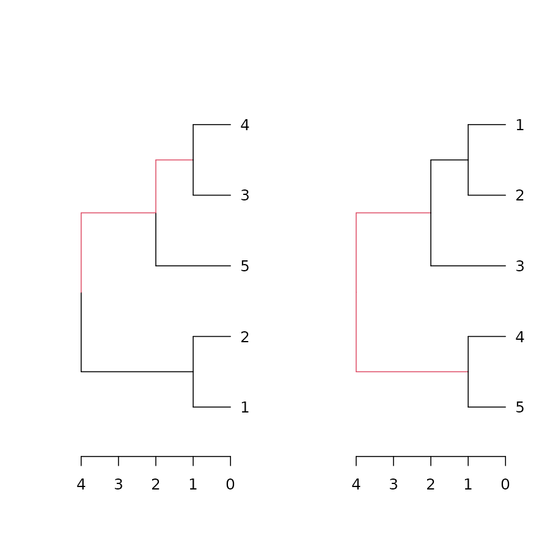
dist.dendlist(dend1234)#> Complete Single Average
#> Single 6
#> Average 2 4
#> Centroid 4 2 2This function might implement other topological distances in the future.
Correlation matrix using cor.dendlist
Both Baker’s Gamma and cophenetic correlation (Which will be
introduced shortly), can be calculated to create a correlation matrix
using the cor.dendlist function (the default method is
cophenetic correlation):
cor.dendlist(dend1234)#> Complete Single Average Centroid
#> Complete 1.0000000 0.4272001 0.5635291 0.4466374
#> Single 0.4272001 1.0000000 0.9508998 0.9910913
#> Average 0.5635291 0.9508998 1.0000000 0.9556376
#> Centroid 0.4466374 0.9910913 0.9556376 1.0000000The corrplot library offers a nice visualization:
#> corrplot 0.92 loaded
corrplot(cor.dendlist(dend1234), "pie", "lower")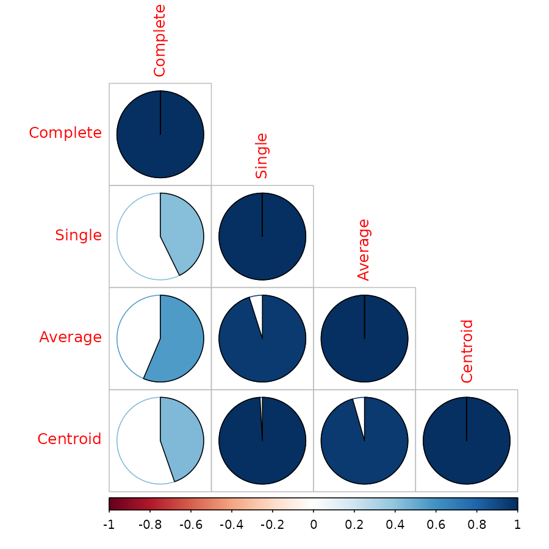
Which easily tells us that single, average and centroid give similar results, while complete is somewhat different.
# same subtrees, so there is no need to color the branches
dend1234 %>% tanglegram(which = c(2,3)) 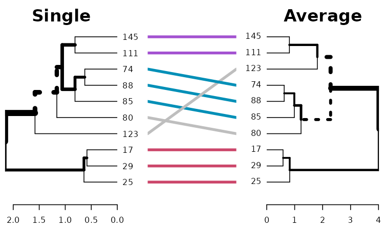
# Here the branches colors are very helpful:
dend1234 %>% tanglegram(which = c(1,2),
common_subtrees_color_branches = TRUE)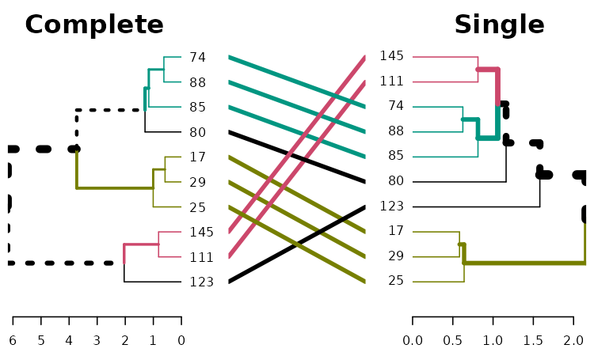
Baker’s Gamma Index
Baker’s Gamma Index (see baker’s paper from 1974) is a measure of association (similarity) between two trees of Hierarchical clustering (dendrograms). It is defined as the rank correlation between the stages at which pairs of objects combine in each of the two trees.
Or more detailed: It is calculated by taking two items, and see what is the highest possible level of k (number of cluster groups created when cutting the tree) for which the two item still belongs to the same tree. That k is returned, and the same is done for these two items for the second tree. There are n over 2 combinations of such pairs of items from the items in the tree, and all of these numbers are calculated for each of the two trees. Then, these two sets of numbers (a set for the items in each tree) are paired according to the pairs of items compared, and a Spearman correlation is calculated.
The value can range between -1 to 1. With near 0 values meaning that the two trees are not statistically similar. For exact p-value one should use a permutation test. One such option will be to permute over the labels of one tree many times, calculating the distribution under the null hypothesis (keeping the trees topologies constant).
Notice that this measure is not affected by the height of a branch but only of its relative position compared with other branches.
cor_bakers_gamma(dend15, dend51)#> [1] 0.2751938Even that we can reach perfect entanglement, Baker’s gamma shows us that the tree’s topology is not identical. As opposed with the correlation of a tree with itself:
cor_bakers_gamma(dend15, dend15)#> [1] 1Since the observations creating the Baker’s Gamma Index of such a measure are correlated, we need to perform a permutation test for the calculation of the statistical significance of the index. Let’s look at the distribution of Baker’s Gamma Index under the null hypothesis (assuming fixed tree topologies). This will be different for different tree structures and sizes. Here are the results when the compared tree is itself (after shuffling its own labels), and when comparing tree 1 to the shuffled tree 2:
set.seed(23235)
the_cor <- cor_bakers_gamma(dend15, dend15)
the_cor2 <- cor_bakers_gamma(dend15, dend51)
the_cor#> [1] 1
the_cor2#> [1] 0.2751938
R <- 100
cor_bakers_gamma_results <- numeric(R)
dend_mixed <- dend15
for(i in 1:R) {
dend_mixed <- sample.dendrogram(dend_mixed, replace = FALSE)
cor_bakers_gamma_results[i] <- cor_bakers_gamma(dend15, dend_mixed)
}
plot(density(cor_bakers_gamma_results),
main = "Baker's gamma distribution under H0",
xlim = c(-1,1))
abline(v = 0, lty = 2)
abline(v = the_cor, lty = 2, col = 2)
abline(v = the_cor2, lty = 2, col = 4)
legend("topleft", legend = c("cor", "cor2"), fill = c(2,4))
round(sum(the_cor2 < cor_bakers_gamma_results)/ R, 4)#> [1] 0.17
title(sub = paste("One sided p-value:",
"cor =", round(sum(the_cor < cor_bakers_gamma_results)/ R, 4),
" ; cor2 =", round(sum(the_cor2 < cor_bakers_gamma_results)/ R, 4)
))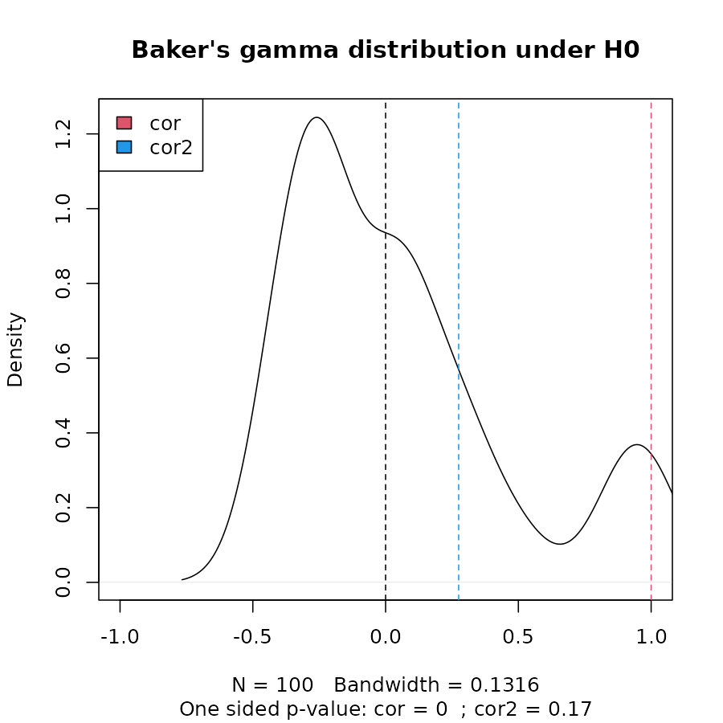
We can see that we do not have enough evidence that dend15 and dend51 are significantly “similar” (i.e.: with a correlation larger than 0).
We can also build a bootstrap confidence interval, using
sample.dendrogram, for the correlation. This function can
be very slow for larger trees, so make sure you use if carefully:
dend1 <- dend15
dend2 <- dend51
set.seed(23801)
R <- 100
dend1_labels <- labels(dend1)
dend2_labels <- labels(dend2)
cor_bakers_gamma_results <- numeric(R)
for(i in 1:R) {
sampled_labels <- sample(dend1_labels, replace = TRUE)
# members needs to be fixed since it will be later used in nleaves
dend_mixed1 <- sample.dendrogram(dend1,
dend_labels=dend1_labels,
fix_members=TRUE,fix_order=TRUE,fix_midpoint=FALSE,
replace = TRUE, sampled_labels=sampled_labels
)
dend_mixed2 <- sample.dendrogram(dend2, dend_labels=dend2_labels,
fix_members=TRUE,fix_order=TRUE,fix_midpoint=FALSE,
replace = TRUE, sampled_labels=sampled_labels
)
cor_bakers_gamma_results[i] <- cor_bakers_gamma(dend_mixed1, dend_mixed2, warn = FALSE)
}
# here is the tanglegram
tanglegram(dend1, dend2)
# And here is the tanglegram for one sample of our trees:
dend_mixed1 <- rank_order.dendrogram(dend_mixed1)
dend_mixed2 <- rank_order.dendrogram(dend_mixed2)
dend_mixed1 <- fix_members_attr.dendrogram(dend_mixed1)
dend_mixed2 <- fix_members_attr.dendrogram(dend_mixed2)
tanglegram(dend_mixed1, dend_mixed2)
cor_bakers_gamma(dend_mixed1, dend_mixed2, warn = FALSE)#> [1] 1#> 2.5% 97.5%
#> 0.2751938 1.0000000
par(mfrow = c(1,1))
plot(density(cor_bakers_gamma_results),
main = "Baker's gamma bootstrap distribution",
xlim = c(-1,1))
abline(v = CI95, lty = 2, col = 3)
abline(v = cor_bakers_gamma(dend1, dend2), lty = 2, col = 2)
legend("topleft", legend =c("95% CI", "Baker's Gamma Index"), fill = c(3,2))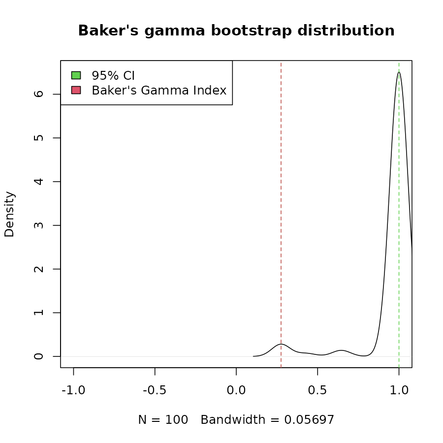
The bootstrap sampling can do weird things with small trees. In this case we had many times that the two trees got perfect correlation. The usage and interpretation should be done carefully!
Cophenetic correlation
The cophenetic distance between two observations that have been clustered is defined to be the inter-group dissimilarity at which the two observations are first combined into a single cluster. This distance has many ties and restrictions. The cophenetic correlation (see sokal 1962) is the correlation between two cophenetic distance matrices of two trees.
The value can range between -1 to 1. With near 0 values meaning that the two trees are not statistically similar. For exact p-value one should result to a permutation test. One such option will be to permute over the labels of one tree many times, and calculating the distribution under the null hypothesis (keeping the trees topologies constant).
cor_cophenetic(dend15, dend51)#> [1] 0.3125The function cor_cophenetic is faster than
cor_bakers_gamma, and might be preferred for that
reason.
The Fowlkes-Mallows Index and the Bk plot
The Fowlkes-Mallows Index
The Fowlkes-Mallows Index (see fowlkes 1983) (FM Index, or Bk) is a measure of similarity between two clusterings. The FM index ranges from 0 to 1, a higher value indicates a greater similarity between the two clusters.
The dendextend package allows the calculation of FM-Index, its expectancy and variance under the null hypothesis, and a creation of permutations of the FM-Index under H0. Thanks to the profdpm package, we have another example of calculating the FM (though it does not offer the expectancy and variance under H0):
hc1 <- hclust(dist(iris[,-5]), "com")
hc2 <- hclust(dist(iris[,-5]), "single")
# FM index of a cluster with himself is 1:
FM_index(cutree(hc1, k=3), cutree(hc1, k=3))#> [1] 1
#> attr(,"E_FM")
#> [1] 0.37217
#> attr(,"V_FM")
#> [1] 5.985372e-05#> [1] 0.8059522
#> attr(,"E_FM")
#> [1] 0.4462325
#> attr(,"V_FM")
#> [1] 6.464092e-05
# we got a value far above the expected under H0
# Using the R code:
FM_index_R(cutree(hc1, k=3), cutree(hc2, k=3))#> [1] 0.8059522
#> attr(,"E_FM")
#> [1] 0.4462325
#> attr(,"V_FM")
#> [1] 6.464092e-05The E_FM and V_FM are the values expected under the null hypothesis that the two trees have the same topology but one is a random shuffle of the labels of the other (i.e.: “no connection” between the trees).
So for the values:
#> [1] 0.8059522
#> attr(,"E_FM")
#> [1] 0.4462325
#> attr(,"V_FM")
#> [1] 6.464092e-05We can take (under a normal asymptotic distribution)
0.4462 + 1.645 * sqrt(6.464092e-05)#> [1] 0.4594257And since 0.8059 (our value) > 0.4594 (the critical value under H0, with alpha=5% for a one sided test) - then we can say that we significantly reject the hypothesis that the two trees are “not-similar”.
The Bk plot
In the Bk method we calculate the FM Index (Bk) for each k (k=2,3,…,n-1) number of clusters, giving the association between the two trees when each is cut to have k groups. The similarity between two hierarchical clustering dendrograms, can be investigated, using the (k,Bk) plot: For every level of splitting of the two dendrograms which produces k clusters in each tree, the plot shows the number Bk, and therefore enables the investigation of potential nuances in the structure of similarity. The Bk measures the number of pairs of items which are in the same cluster in both dendrograms, one of the clusters in one of the trees and one of the clusters in the other tree, divided by the geometric mean of the number of pairs of items which are in the same cluster in each tree. Namely, \({a_{uv}} = 1\left( {or{\rm{ }}{{\rm{b}}_{uv}} = 1} \right)\) if the items u and v are in the same cluster in the first tree (second tree), when it is cut so to give k clusters, and otherwise 0:
\[{FM_k} = {B_k} = \frac{{\sum\limits_{}^{} {{a_{uv}}{b_{uv}}} }}{{\sqrt {\sum\limits_{}^{} {{a_{uv}}} \sum\limits_{}^{} {{b_{uv}}} } }}\]
The Bk measure can be plotted for every value of k (except k=n) in order to create the “(k,Bk) plot”. The plot compares the similarity of the two trees for different cuts. The mean and variance of Bk, under the null hypothesis (that the two trees are not “similar”), and under the assumption that the margins of the matching matrix are fixed, are given in Fowlkes and Mallows (see fowlkes 1983). They allow making inference on whether the results obtained are different from what would have been expected under the null hypothesis (of now particular order of the trees’ labels).
The Bk and the Bk_plot functions allow the
calculation of the FM-Index for a range of k values on two trees. Here
are examples:
set.seed(23235)
ss <- TRUE # sample(1:150, 30 ) # TRUE #
hc1 <- hclust(dist(iris[ss,-5]), "com")
hc2 <- hclust(dist(iris[ss,-5]), "single")
dend1 <- as.dendrogram(hc1)
dend2 <- as.dendrogram(hc2)
# cutree(tree1)
# It works the same for hclust and dendrograms:
Bk(hc1, hc2, k = 3)#> $`3`
#> [1] 0.8059522
#> attr(,"E_FM")
#> [1] 0.4462325
#> attr(,"V_FM")
#> [1] 6.464092e-05
Bk(dend1, dend2, k = 3)#> $`3`
#> [1] 0.8059522
#> attr(,"E_FM")
#> [1] 0.4462325
#> attr(,"V_FM")
#> [1] 6.464092e-05The Bk plot:
Bk_plot(hc1, hc2, main = "WRONG Bk plot \n(due to the way cutree works with ties in hclust)", warn = FALSE)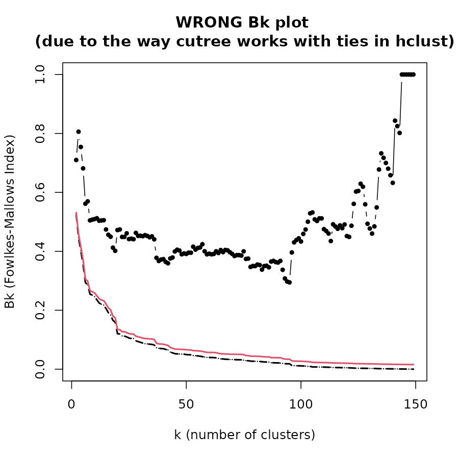
Bk_plot(dend1, dend2, main = "CORRECT Bk plot \n(based on dendrograms)")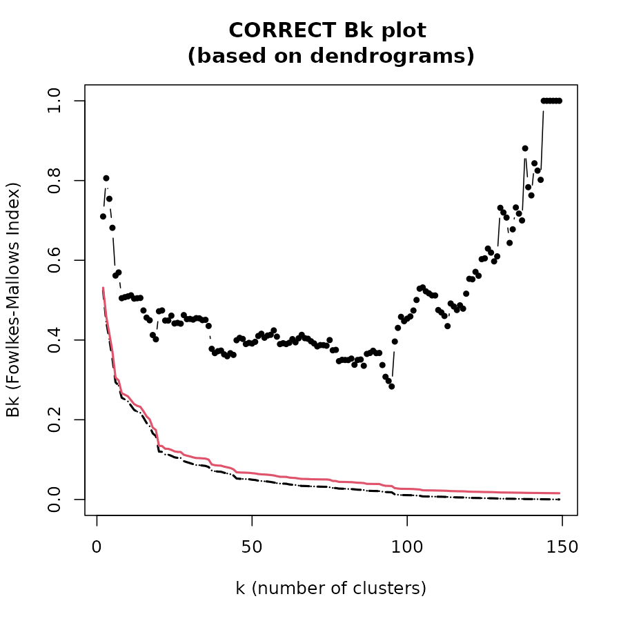
Session info
#> R version 4.3.2 (2023-10-31)
#> Platform: x86_64-pc-linux-gnu (64-bit)
#> Running under: Ubuntu 22.04.3 LTS
#>
#> Matrix products: default
#> BLAS: /usr/lib/x86_64-linux-gnu/openblas-pthread/libblas.so.3
#> LAPACK: /usr/lib/x86_64-linux-gnu/openblas-pthread/libopenblasp-r0.3.20.so; LAPACK version 3.10.0
#>
#> locale:
#> [1] LC_CTYPE=C.UTF-8 LC_NUMERIC=C LC_TIME=C.UTF-8
#> [4] LC_COLLATE=C.UTF-8 LC_MONETARY=C.UTF-8 LC_MESSAGES=C.UTF-8
#> [7] LC_PAPER=C.UTF-8 LC_NAME=C LC_ADDRESS=C
#> [10] LC_TELEPHONE=C LC_MEASUREMENT=C.UTF-8 LC_IDENTIFICATION=C
#>
#> time zone: UTC
#> tzcode source: system (glibc)
#>
#> attached base packages:
#> [1] stats graphics grDevices utils datasets methods base
#>
#> other attached packages:
#> [1] corrplot_0.92 circlize_0.4.15 pvclust_2.2-0
#> [4] dynamicTreeCut_1.63-1 gplots_3.1.3 DendSer_1.0.2
#> [7] seriation_1.5.4 gclus_1.3.2 cluster_2.1.4
#> [10] ggplot2_3.4.4 viridis_0.6.4 viridisLite_0.4.2
#> [13] colorspace_2.1-0 knitr_1.45 dendextend_1.18.0
#>
#> loaded via a namespace (and not attached):
#> [1] gtable_0.3.4 shape_1.4.6 xfun_0.41
#> [4] bslib_0.6.1 GlobalOptions_0.1.2 caTools_1.18.2
#> [7] vctrs_0.6.5 tools_4.3.2 bitops_1.0-7
#> [10] generics_0.1.3 tibble_3.2.1 ca_0.71.1
#> [13] fansi_1.0.6 highr_0.10 pkgconfig_2.0.3
#> [16] KernSmooth_2.23-22 desc_1.4.3 lifecycle_1.0.4
#> [19] compiler_4.3.2 farver_2.1.1 stringr_1.5.1
#> [22] textshaping_0.3.7 munsell_0.5.0 codetools_0.2-19
#> [25] htmltools_0.5.7 sass_0.4.8 yaml_2.3.8
#> [28] pillar_1.9.0 pkgdown_2.0.7 jquerylib_0.1.4
#> [31] cachem_1.0.8 iterators_1.0.14 TSP_1.2-4
#> [34] foreach_1.5.2 gtools_3.9.5 tidyselect_1.2.0
#> [37] digest_0.6.33 stringi_1.8.3 dplyr_1.1.4
#> [40] purrr_1.0.2 labeling_0.4.3 fastmap_1.1.1
#> [43] grid_4.3.2 cli_3.6.2 magrittr_2.0.3
#> [46] utf8_1.2.4 withr_2.5.2 scales_1.3.0
#> [49] registry_0.5-1 rmarkdown_2.25 gridExtra_2.3
#> [52] ragg_1.2.7 memoise_2.0.1 evaluate_0.23
#> [55] rlang_1.1.2 glue_1.6.2 jsonlite_1.8.8
#> [58] R6_2.5.1 systemfonts_1.0.5 fs_1.6.3